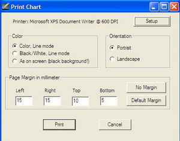

File Menu
The File menu includes the following options
New Chart
The new V3 of Cartes du Ciel enables you to open different windows with separate sky charts. The advantage is that you can visualize different charts at the same moment for different locations, time or even display configuration.
After creating a new chart you can arrange the charts through the Window menu. You can maximize, minimize, close or even resize each chart by dragging the right and bottom edges.
Open
Use this to open a previously saved sky chart with its own configuration of the location and time.
Save As...
This saves the active sky chart to a file that you can reload in the future with the Open option.
Close Chart
This will close the active chart, only when you have more than one chart open.
Reset chart and options
Reset the chart and the options to the last saved configuration. The result is the same as when you would close the map without saving followed by restarting the program.
Calendar
This function informs you about some astronomical phenomenona for a given time period.
The window is composed of seven areas:
- an input area. Look at this page for further details.
- a Twilight tab. Look at this page for further details.
- a Planet tab. Look at this page for further details.
- a Comet tab. Look at this page for further details.
- a Asteroid tab. Look at this page for further details.
- a Solar Eclipses tab. Look at this page for further details.
- a Lunar Eclipses tab. Look at this page for further details.
Variable Stars
Launch the Variable Stars Observer program.
Save Image...
The active sky chart is saved as an image. It is possible to select PNG, JPEG or BMP format for the file.

The Print dialog box enables you to choose your settings for the 'printer-target', regardless if this is a real printer or a file.
Printing can be done in the colours as on the screen, in black&white or in reversed black&white (with black background sky). The orientation and the paper margins can also be selected.
{kind=link}
Printer Setup
 Configures the printer to print the screen content. There are three options:
Configures the printer to print the screen content. There are three options:
- System Printer: It enables you to configure a real printer.
- Postscript: It enables you print to a postscript file. It requires you to have Ghostscript and GsView32 installed and a correctly configured path. It will only work with version 7.xx of GsView32.
- Bitmap file: It enables you to print the chart to a BMP file. It is required to have a correctly configured path to the MsPaint executable.
Exit
Just that, exits the program Cartes du Ciel